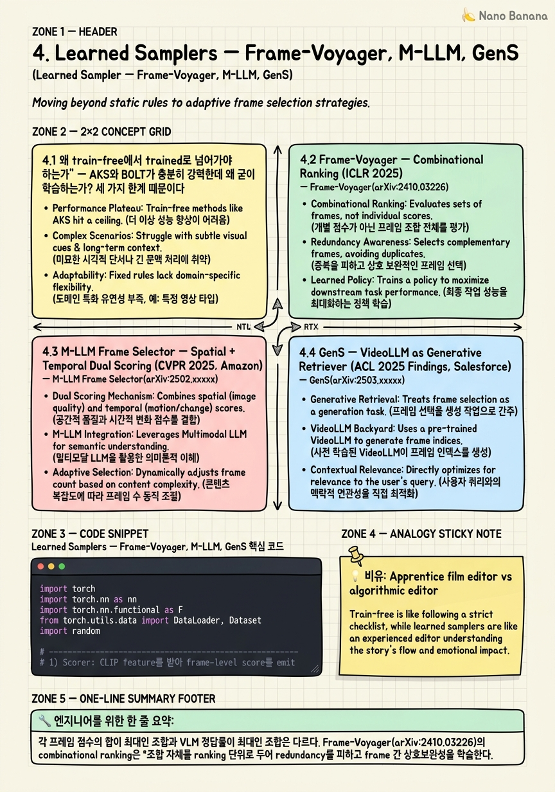

Learned Samplers — Frame-Voyager, M-LLM, GenS

🎯 학습 목표
- 왜 단일 프레임 ranking이 실패하고 combinational ranking이 이기는지 정보이론적으로 설명할 수 있다
- M-LLM Selector의 spatial branch와 temporal branch가 각각 무엇을 보정하는지 구분할 수 있다
- GenS의 generative retrieval이 일반 retriever와 어떻게 다른지, autoregressive head가 왜 long-range coherence를 잡는지 안다
- Downstream VLM accuracy를 reward로 backprop하기 위한 surrogate loss를 설계할 수 있다
- 자체 video corpus와 안정적인 downstream VLM이 있을 때 train-free에서 learned로 넘어갈 시점을 판단할 수 있다
- Sampler를 학습한 후에도 downstream LLM을 건드리지 않고 swap할 수 있는 modular boundary를 유지할 수 있다
3장에서 다룬 AKS와 BOLT는 training-free였다. 휴리스틱으로 query–frame relevance와 coverage를 정의하고 그 위에서 최적화했다. 하지만 휴리스틱에는 한계가 있다 — 'relevance'를 CLIP cosine similarity로 정의한 순간 우리는 CLIP의 편향을 그대로 물려받는다. 4장의 출발점은 단순하다. downstream VLM의 정답률이 곧 ground truth라면, 그 신호로 sampler를 직접 학습하면 안 되는가? 2025년의 세 landmark 논문이 이 질문에 서로 다른 방향으로 답했다.
Frame-Voyager(arXiv:2410.03226, ICLR 2025)는 무엇을 ranking하느냐를 바꿨다. 기존 sampler들은 프레임 하나하나에 점수를 매기고 top-K를 골랐다. Frame-Voyager는 *프레임 조합* 자체에 점수를 매긴다. 8프레임을 뽑는 문제에서 단일 프레임 점수 합이 최대인 조합과 실제로 VLM이 정답을 맞히는 조합은 다르다는 통찰이다.
M-LLM Frame Selector(arXiv:2502.19680, CVPR 2025, Amazon)는 누가 점수를 매기느냐를 바꿨다. CLIP이 아니라 multimodal LLM 자체가 두 가지 분리된 점수 — 개별 프레임의 spatial importance와 프레임 시퀀스의 temporal coherence — 를 매긴다. 그리고 그 점수를 frozen downstream Video-LLM에 그대로 꽂는다.
GenS(arXiv:2503.09146, ACL 2025 Findings, Salesforce / Li Junnan팀)는 한 발 더 나갔다. 점수를 매기지 않고 인덱스를 생성한다. VideoLLM이 입력 비디오와 질의를 보고 autoregressive하게 'frame 42, 117, 203, ...'을 텍스트 토큰으로 emit한다. LongVideoBench에서 Aria 기반 +13.4pt, GPT-4o 기반 +13.6pt라는 결과로 generative retrieval의 우월성을 보였다.
세 접근 모두 공통점이 있다 — downstream VLM은 frozen이다. Sampler만 학습하고, 학습된 sampler는 LLaVA-Video든 Qwen2.5-VL든 GPT-4o든 그대로 꽂힌다. Plug-and-play 계약은 유지된다.
핵심 내용
4.1 왜 train-free에서 trained로 넘어가야 하는가
AKS와 BOLT가 충분히 강력한데 왜 굳이 학습하는가? 세 가지 한계 때문이다.
첫째, relevance proxy의 편향. AKS와 BOLT는 CLIP/SigLIP의 query–frame similarity를 relevance로 쓴다. CLIP은 정적인 객체 인식에 강하지만 행동, 인과, 시간적 추론에는 약하다. 'Why did the man drop the cup?'이라는 질문에서 컵을 보여주는 모든 프레임이 높은 점수를 받지만, 정작 손이 미끄러지는 결정적 프레임은 낮은 점수를 받는다. CLIP은 '왜'를 모른다.
둘째, 조합의 비선형성. 8프레임을 고를 때, 각 프레임 점수의 합이 최대인 조합이 VLM 정답률을 최대화하지는 않는다. Frame-Voyager 논문이 보인 핵심 관찰이다 — 단일 프레임 ranking은 redundant한 high-score 프레임을 모으는 경향이 있고, VLM은 다양성이 필요한 질문에서 실패한다.
셋째, downstream VLM의 인식 특성을 무시. Sampler가 고른 프레임이 '인간 보기엔 좋다'와 '특정 VLM이 정답을 맞히는 데 좋다'는 다르다. Qwen2.5-VL이 잘 읽는 프레임과 LLaVA-Video가 잘 읽는 프레임은 다르다. Trained sampler는 이 차이를 흡수할 수 있다.
반대 방향의 비용도 명확하다 — (frames, query, correctness) triplet을 수집해야 하고, downstream VLM이 바뀌면 재학습해야 한다. 그래서 train-free와 trained의 경계는 'video corpus의 안정성'과 'downstream VLM의 안정성' 두 축이다. 둘 다 안정적이면 trained가 이기고, 어느 하나라도 흔들리면 train-free가 안전하다.
4.2 Frame-Voyager — Combinational Ranking (ICLR 2025)
Frame-Voyager(arXiv:2410.03226, Yu et al.)의 핵심 슬로건은 'rank combinations, not frames'이다.
문제 정식화. 비디오 V에서 8프레임을 뽑는다고 하자. 가능한 조합은 C(T, 8)개. 각 조합 S에 대해 downstream VLM이 정답을 맞히는지를 reward r(S) ∈ {0,1}로 본다. 목표는 r(S)가 높은 조합을 선호하도록 scorer f(S, q)를 학습하는 것이다.
Combinational ranking loss. 학습 데이터는 한 query q에 대해 여러 조합 {S_1, S_2, ...}을 샘플링하고, 각각을 downstream VLM에 통과시켜 reward를 얻은 후 pairwise ranking loss로 학습한다.
L = Σ_{i,j: r(S_i)>r(S_j)} max(0, m - f(S_i, q) + f(S_j, q))
Scorer f는 조합 안의 프레임들을 함께 encoding한다 (transformer로 cross-attention). 그래서 'A와 B는 같이 있을 때 의미 있다'는 신호가 학습된다.
Inference. 모든 조합을 enumerate하는 건 불가능하므로 beam search나 greedy improvement로 근사한다. 논문은 candidate pool을 CLIP top-K로 줄인 후 그 위에서 조합 ranking을 한다.
결과. Video-MME long split, MVBench, NExT-QA에서 단일 프레임 ranking 대비 일관되게 우위. 특히 multi-hop 추론이 필요한 질문에서 격차가 커진다.
왜 조합이 이기는가? 정보이론으로 보면 H(answer | frames) — 8개 프레임을 봤을 때 정답의 조건부 엔트로피 — 를 최소화하는 것이 목표인데, 이건 sum of mutual information이 아니라 joint mutual information이다. Joint는 조합 단위로만 측정 가능하다.
4.3 M-LLM Frame Selector — Spatial + Temporal Dual Scoring (CVPR 2025, Amazon)
M-LLM Frame Selector(arXiv:2502.19680, Hu et al., Amazon)는 'scorer로 무엇을 쓰느냐'를 재정의했다. CLIP 대신 multimodal LLM을 쓴다.
Dual branch 구조. - Spatial importance branch: 한 프레임씩 보면서 'this frame is relevant to query'를 M-LLM에 묻고 logit을 뽑는다. 단일 프레임 점수. - Temporal coherence branch: 후보 프레임들의 시퀀스를 한꺼번에 보고 'this sequence is coherent for answering query'를 묻는다. 시퀀스 점수.
두 점수를 weighted sum하여 최종 selection criterion으로 쓴다.
왜 두 개로 나누나? Spatial은 'each frame must be informative'를 강제하고, temporal은 'frames must tell a story together'를 강제한다. 한 점수로 합치면 둘 중 하나가 다른 하나를 덮어버린다. 명시적으로 분리해야 학습이 안정적이다.
Plug-and-play. Selector M-LLM은 학습 가능하지만 downstream Video-LLM은 frozen이다. LLaVA-Video, VideoLLaMA, InternVL 어떤 downstream에도 그대로 꽂힌다. Amazon이 이 구조를 미는 이유는 명확하다 — 그들의 production stack에는 Bedrock에 다양한 VLM이 있고, sampler 하나로 모두 커버하고 싶다.
학습 신호. Downstream VLM accuracy를 reward로 쓰되, M-LLM scorer의 출력 logit에 대한 RL/preference learning으로 propagate한다. 직접 backprop이 안 되니 reward를 weak supervision으로 변환한다 (5절 코드 예제 참고).
결과. Video-MME, MLVU, NExT-QA에서 uniform 대비 5–8pt, AKS 대비 1–3pt 추가 개선. CLIP 기반 sampler가 놓치는 'temporal causality' 질문에서 특히 강하다.
4.4 GenS — VideoLLM as Generative Retriever (ACL 2025 Findings, Salesforce)
GenS(arXiv:2503.09146, Yao et al., Salesforce / Li Junnan팀)는 가장 급진적인 접근이다. Scoring을 버리고 generation으로 갔다.
핵심 아이디어. VideoLLM에 비디오와 질의를 주고 'Which frame indices should I attend to?'라고 prompt한다. 모델이 autoregressive하게 '[12, 47, 89, 134, ...]'을 텍스트 토큰으로 emit한다. 이 indices를 downstream VLM에 전달.
왜 generative가 이기는가? - Long-range dependency: Autoregressive head는 '이전에 뽑은 인덱스를 보고 다음 인덱스를 결정'할 수 있다. Frame i를 골랐다면 frame i 근처의 redundancy를 피해 frame j를 다음에 고른다. Pointwise scorer는 이 dependency를 못 잡는다. - Variable selection size: VLM이 stop token을 emit하면 selection 종료. 질문마다 필요한 프레임 수가 다를 수 있는데, 이 가변성을 자연스럽게 처리한다. - Joint distribution 학습: P(S | V, q)를 인덱스 시퀀스의 autoregressive factorization으로 학습 — Frame-Voyager의 combinational ranking을 generative하게 일반화한 셈.
학습. Downstream VLM의 정답률이 높은 frame sequence를 ground truth로 삼아 standard language modeling loss로 학습한다. 즉, instruction tuning과 동형이다 — 'video + query → frame indices' 형식의 supervised fine-tuning.
Benchmark 결과. LongVideoBench에서: - Aria-25B + GenS: 기존 uniform 대비 +13.4pt - GPT-4o + GenS: 기존 uniform 대비 +13.6pt
이 격차는 다른 어떤 sampler보다 크다. Generative retrieval이 long video에서 특히 강하다는 강한 증거.
비용. 단점은 inference 비용이다. VideoLLM을 두 번 호출 — 한 번은 selection, 한 번은 final answer. Sampling 자체에 VLM 호출이 들어가므로 latency budget이 큰 production에는 부담스럽다. Offline indexing이나 batch processing에서 이상적이다.
4.5 Training-Free vs Trained Decision Tree
언제 trained sampler를 학습할 가치가 있는가? 의사결정 트리.
Q1. 자체 video corpus가 있는가? - 없음 (사용자가 임의의 URL을 던짐) → train-free 추천. 학습 분포가 inference 분포와 다르면 trained sampler가 오히려 떨어진다. - 있음 (자사 콘텐츠, 정해진 도메인) → Q2로.
Q2. Downstream VLM이 안정적인가? (6개월 이상 고정 또는 fine-tune 통제 가능) - 불안정 (월마다 GPT-4o → Gemini → Claude로 갈아탐) → train-free. Sampler 재학습 비용이 누적된다. - 안정 → Q3로.
Q3. Labeled QA 데이터가 있는가? (>10K 정도) - 없음 → GenS-style self-supervised 학습 시도하거나, train-free에 머무름. - 있음 → Q4로.
Q4. Latency 예산은? - <500ms p50 → Frame-Voyager 또는 M-LLM Selector (compact scorer). GenS는 부담. - ≥2s 또는 offline → GenS가 최강.
Q5. Frame budget이 매우 작은가? (≤8 frames) - Yes → Combinational ranking(Frame-Voyager) 효과가 크다. - No (≥32 frames) → 단순한 M-LLM scoring으로 충분할 수 있다.
경험칙 — 학습 비용 손익분기점. Trained sampler는 보통 학습에 100–500 A100 hours가 든다. 그 비용을 inference 시 절약되는 token 비용으로 회수하려면 대략 월간 10만 query 이상 처리할 때 의미가 있다. 그 이하 규모면 AKS/BOLT가 운영상 더 합리적이다.
4.6 Plug-and-Play 인터페이스가 유지되는 이유
세 sampler 모두 downstream VLM을 frozen으로 둔다. 이게 단순한 엔지니어링 편의가 아니라 학술적 선택이다 — Sampler 학습 신호가 downstream VLM의 gradient를 타고 흐르지 않게 분리함으로써 sampler가 *특정 VLM에 overfit하지 않도록* 막는다.
계약 (Sampler interface).
`
select(video: Tensor[T,H,W,3],
query: str,
max_frames: int) -> List[int] # frame indices
`
Frame-Voyager, M-LLM Selector, GenS 모두 이 동일한 signature를 따른다. 이 덕분에 아래가 가능하다.
- Swap downstream VLM: LLaVA-Video-7B로 학습한 sampler를 Qwen2.5-VL에 꽂아도 작동한다 (성능 일부 손실은 있지만 catastrophic하지 않다). - Swap sampler at inference: 같은 pipeline에서 짧은 비디오는 AKS, 긴 비디오는 GenS로 라우팅 가능. - A/B test: Sampler만 바꿔 latency/accuracy trade-off 측정.
유지 안 되는 경우 — 안티패턴. Sampler 학습 시 downstream VLM의 internal feature(중간 layer activation)를 쓰면 plug-and-play가 깨진다. 이건 sampler가 그 VLM의 internals에 묶이는 결과. 세 논문 모두 이를 피해 black-box reward만 쓴다.
💡 비유로 이해하기
3장에서 본 AKS/BOLT는 algorithmic editor였다. '대화 장면이 길면 컷, 액션이 빠르면 더 많이 컷'같은 규칙을 손으로 짜놓고, 새 영화가 들어오면 그 규칙대로 자른다. 빠르고, 예측 가능하고, 어떤 영화에든 그대로 돌아간다.
4장의 learned sampler는 director's cut 100편을 보여주며 키운 견습 편집자다. Christopher Nolan이 어떻게 잘랐는지, Bong Joon-ho가 어떻게 잘랐는지를 보면서 '아, 긴장이 풀리기 직전의 1초를 살려야 하는구나' 같은 *taste*를 익혔다. 새 영화에서도 그 taste가 작동한다.
하지만 견습 편집자에게도 약점이 있다. - 학습 비용: 100편의 director's cut과 raw footage를 수집해야 한다. Frame-Voyager/M-LLM/GenS의 (frames, query, correctness) triplet에 해당. - 분포 외 영화: 누아르만 보고 자란 편집자는 코미디에서 헤맨다. Train-free는 장르를 안 가린다. - 감독이 바뀌면 다시 배워야: Downstream VLM이 바뀌면 sampler 재학습.
세 sampler 간에도 성격이 다르다. - Frame-Voyager는 '한 장면 안의 컷들이 어떻게 조합되어야 하는지'를 배운 편집자 — 단일 컷이 아니라 조합을 본다. - M-LLM Selector는 '각 컷의 미학(spatial)'과 '컷의 흐름(temporal)'을 따로 평가하는 편집자 — Amazon이 좋아할 만한 modular 사람. - GenS는 자기가 직접 '여기, 여기, 여기 자르세요'라고 *말하는* 편집자 — scoring이 아니라 generation. 가장 비싸지만 long video에서 가장 정확하다.
💻 코드 예시
아래는 작은 learned scorer를 학습하는 toy training loop이다. CLIP feature 위에 MLP를 얹어 'frame이 query에 얼마나 유용한가'를 예측하되, supervision은 downstream VLM의 정답률에서 온다. Frame-Voyager의 combinational ranking과 M-LLM Selector의 reward-based learning을 단순화한 형태. Runnable Python으로 작성했고, 실제 학습에는 더 큰 batch와 hard negative mining이 필요하다.
import torch
import torch.nn as nn
import torch.nn.functional as F
from torch.utils.data import DataLoader, Dataset
import random
# -----------------------------------------------------------
# 1) Scorer: CLIP feature를 받아 frame-level score를 emit
# 조합 점수는 frame score의 attention-weighted sum으로 정의
# -----------------------------------------------------------
class CombinationalScorer(nn.Module):
def __init__(self, d_clip=768, d_text=768, d_hidden=512):
super().__init__()
self.frame_proj = nn.Linear(d_clip, d_hidden)
self.text_proj = nn.Linear(d_text, d_hidden)
# Cross-attention: 조합 안 frame들이 서로를 의식하도록
self.cross_attn = nn.MultiheadAttention(d_hidden, num_heads=8, batch_first=True)
self.head = nn.Sequential(nn.Linear(d_hidden, d_hidden), nn.GELU(),
nn.Linear(d_hidden, 1))
def forward(self, frame_feats, text_feat):
# frame_feats: [B, K, d_clip] (K = combination size, e.g. 8)
# text_feat: [B, d_text]
f = self.frame_proj(frame_feats) # [B, K, H]
t = self.text_proj(text_feat).unsqueeze(1) # [B, 1, H]
# query=text, key/value=frames → frame들이 query 맥락에서 재해석됨
attended, _ = self.cross_attn(t.expand(-1, f.size(1), -1), f, f)
fused = f + attended # [B, K, H]
per_frame_score = self.head(fused).squeeze(-1) # [B, K]
# 조합 점수 = frame score들의 합 (단순화). 실제로는 set-transformer pooling 권장.
combo_score = per_frame_score.sum(dim=-1) # [B]
return combo_score, per_frame_score
# -----------------------------------------------------------
# 2) Training data: (frame_feats, query_feat, S_pos, S_neg, reward_pos, reward_neg)
# -----------------------------------------------------------
class FrameComboDataset(Dataset):
def __init__(self, samples):
self.samples = samples
def __len__(self): return len(self.samples)
def __getitem__(self, i):
s = self.samples[i]
return (s['video_feats'][s['pos_idx']],
s['video_feats'][s['neg_idx']],
s['q_feat'])
# -----------------------------------------------------------
# 3) Combinational ranking loss (margin-based pairwise)
# -----------------------------------------------------------
def ranking_loss(scorer, pos_feats, neg_feats, q_feat, margin=0.5):
pos_score, _ = scorer(pos_feats, q_feat)
neg_score, _ = scorer(neg_feats, q_feat)
return F.relu(margin - pos_score + neg_score).mean()
# -----------------------------------------------------------
# 4) Training loop. VLM gradient는 흐르지 않는다.
# -----------------------------------------------------------
def train(scorer, dataset, epochs=3, lr=1e-4, bs=32):
loader = DataLoader(dataset, batch_size=bs, shuffle=True)
opt = torch.optim.AdamW(scorer.parameters(), lr=lr)
for ep in range(epochs):
total = 0.0
for pos, neg, q in loader:
opt.zero_grad()
loss = ranking_loss(scorer, pos, neg, q)
loss.backward()
opt.step()
total += loss.item()
print(f"epoch {ep}: loss={total/len(loader):.4f}")
# -----------------------------------------------------------
# 5) Inference: K-frame budget이 주어지면 candidate pool에서 best combo 선택
# -----------------------------------------------------------
@torch.no_grad()
def select_frames(scorer, video_feats, q_feat, K=8, n_trials=200):
T = video_feats.size(0)
best_score, best_idx = -1e9, None
for _ in range(n_trials):
idx = sorted(random.sample(range(T), K))
feats = video_feats[idx].unsqueeze(0)
score, _ = scorer(feats, q_feat.unsqueeze(0))
if score.item() > best_score:
best_score, best_idx = score.item(), idx
return best_idx이 코드의 핵심은 VLM의 gradient가 sampler로 흐르지 않는다는 점이다. Downstream VLM은 학습 데이터를 만들 때만 호출된다 — 'combination S_pos를 VLM에 줬더니 정답을 맞혔다, S_neg를 줬더니 틀렸다'라는 0/1 label만 추출하고 그 이후로는 VLM을 건드리지 않는다.
Cross_attention이 Frame-Voyager의 핵심을 단순화한 부분이다. 각 frame의 representation이 *같은 조합 안 다른 frame들*과 *query*를 함께 보고 갱신된다. 그래서 'A와 B가 같이 있을 때 의미 있다'는 신호가 학습된다. 이 attention이 없으면 frame score가 독립적으로 결정되고 코드는 단순 pointwise scorer로 퇴화한다.
ranking_loss는 Frame-Voyager의 combinational ranking을 그대로 따른다. 절대 score가 아니라 *상대 ordering*만 학습한다. 이게 reward sparsity에 강한 이유 — VLM이 정답을 맞힌 조합과 틀린 조합 두 개만 있으면 학습 신호가 만들어진다.
select_frames는 inference. 실제 production에서는 (a) CLIP/SigLIP top-N으로 후보 pool을 만들고, (b) beam search나 greedy swap으로 조합을 정련한다. 본 코드는 random sampling으로 단순화했다.
M-LLM Selector로 확장하려면 head를 두 개로 나누고 (spatial logit, temporal coherence logit) weighted sum하면 된다. GenS로 확장하려면 scorer 대신 작은 autoregressive transformer를 두고 frame index를 token으로 emit하도록 LM loss로 학습한다.
🏭 현업에서의 평가
✅ 시니어가 보는 것
- **Combinational ranking을 정확히 이해하는가** — 단일 프레임 점수 합이 최대인 조합과 VLM 정답률이 최대인 조합이 *왜 다른지*를 informational 관점에서 설명할 수 있는지
- **Downstream reward를 sampler 학습 신호로 변환하는 구체적 방법** — 'VLM은 0/1 reward를 제공하고 sampler는 그 위에서 ranking/RL/SFT loss로 학습한다'고 답하는지
- **Plug-and-play 경계를 유지하는 설계 선택** — Frame-Voyager/M-LLM/GenS 모두 downstream VLM을 frozen으로 둔다는 사실과 그 이유 (VLM 종속 overfit 방지, 운영상 swap 용이성)를 안다
- **Train-free vs trained의 손익분기점** — 'video corpus 안정성'과 'downstream VLM 안정성' 두 축으로 답하는지. 둘 다 흔들리면 trained가 손해라는 점을 짚는지
- **GenS의 generative retrieval이 왜 pointwise scoring보다 long video에서 강한지** — autoregressive head가 conditional dependency를 잡는다는 점
- **Latency / 비용 trade-off 인식** — GenS는 VLM을 두 번 호출하므로 latency 부담이 크다는 점
⚠️ 레드 플래그
- 'Trained가 항상 train-free보다 좋다'는 무조건적 주장
- Combinational ranking을 'top-K를 더 정교하게 고르는 방법'이라고 잘못 설명
- 'Downstream VLM을 sampler와 jointly fine-tune'한다고 답함 — 세 논문 모두 frozen인데 plug-and-play를 깨는 설계 제안
- GenS의 +13.4/+13.6pt 같은 구체 수치를 모르거나 follow-up에 답을 못 함
- M-LLM Selector의 spatial/temporal dual branch 중 하나로 통합 가능하다고 잘못 단순화
- '학습 데이터는 인간 annotator가 만든다'고 답함 — 세 논문 모두 downstream VLM correctness를 weak label로 자동 생성
🎤 예상 인터뷰 질문
- **Q1. 당신 회사는 자체 e-learning video corpus 30만 시간을 보유하고 있고 downstream VLM으로 LLaVA-Video-72B를 6개월 이상 쓰고 있다. 학생들의 질의응답 query log가 일 50만 건 들어온다. AKS(train-free)와 Frame-Voyager-style trained sampler 중 어느 쪽으로 가야 하는가? 손익분기점을 어떻게 계산하나?**
- **Q2. Frame-Voyager는 왜 단일 프레임 ranking이 아니라 조합 ranking을 쓰는가? '조합 ranking은 C(T,K)로 폭발한다'는 반론에 어떻게 답하는가?**
- **Q3. (frames, query, VLM_correctness) triplet 학습 데이터를 어떻게 구성하나? Sampling 분포의 편향 문제는?**
✨ 핵심 요약
단일 프레임 ranking은 joint mutual information을 못 잡는다
각 프레임 점수의 합이 최대인 조합과 VLM 정답률이 최대인 조합은 다르다. Frame-Voyager(arXiv:2410.03226)의 combinational ranking은 *조합 자체*를 ranking 단위로 두어 redundancy를 피하고 frame 간 상호보완성을 학습한다.
Sampler 학습 신호는 downstream VLM의 정답률에서 자동 생성된다
세 논문 모두 인간 annotator가 아니라 downstream VLM correctness를 weak label로 쓴다. (frames, query, 0/1 correctness) triplet은 자체 corpus와 query log만 있으면 *공짜로* 만들어진다.
M-LLM Selector는 spatial과 temporal을 분리해야 학습이 안정적이다
Amazon CVPR 2025 논문(arXiv:2502.19680)의 dual branch는 한 점수로 합치면 한 신호가 다른 신호를 덮어버린다는 경험적 관찰에서 나왔다.
GenS는 scoring이 아니라 generation으로 long video에서 +13pt를 만든다
VideoLLM이 frame index를 autoregressive하게 emit하는 generative retrieval(arXiv:2503.09146). LongVideoBench에서 Aria +13.4pt, GPT-4o +13.6pt.
Plug-and-play는 downstream VLM을 frozen으로 두기 때문에 유지된다
세 sampler 모두 VLM gradient를 흘리지 않는다. VLM을 black-box reward로 다루는 이 설계가 sampler를 특정 VLM에 overfit시키지 않게 한다.
Train-free에서 trained로 넘어가는 손익분기점은 corpus 안정성과 query 볼륨이다
자체 video corpus가 있고 downstream VLM이 6개월 이상 고정이며 월간 query가 10만 건 이상일 때 trained가 이긴다.
학습 비용은 trained sampler의 진짜 가격표다
Frame-Voyager급 sampler 학습은 보통 100–500 A100 hours가 들고, downstream VLM이 바뀔 때마다 재학습 압력이 있다.
GenS의 latency 부담은 offline indexing에 적합한 구조다
GenS는 VideoLLM을 selection과 generation 두 번 호출한다. Real-time chat에는 부담이지만 offline batch processing, video library indexing에는 적합.